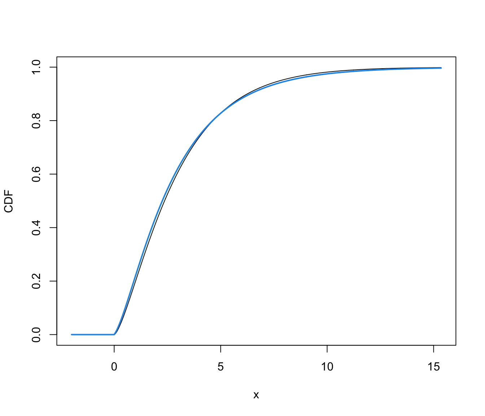
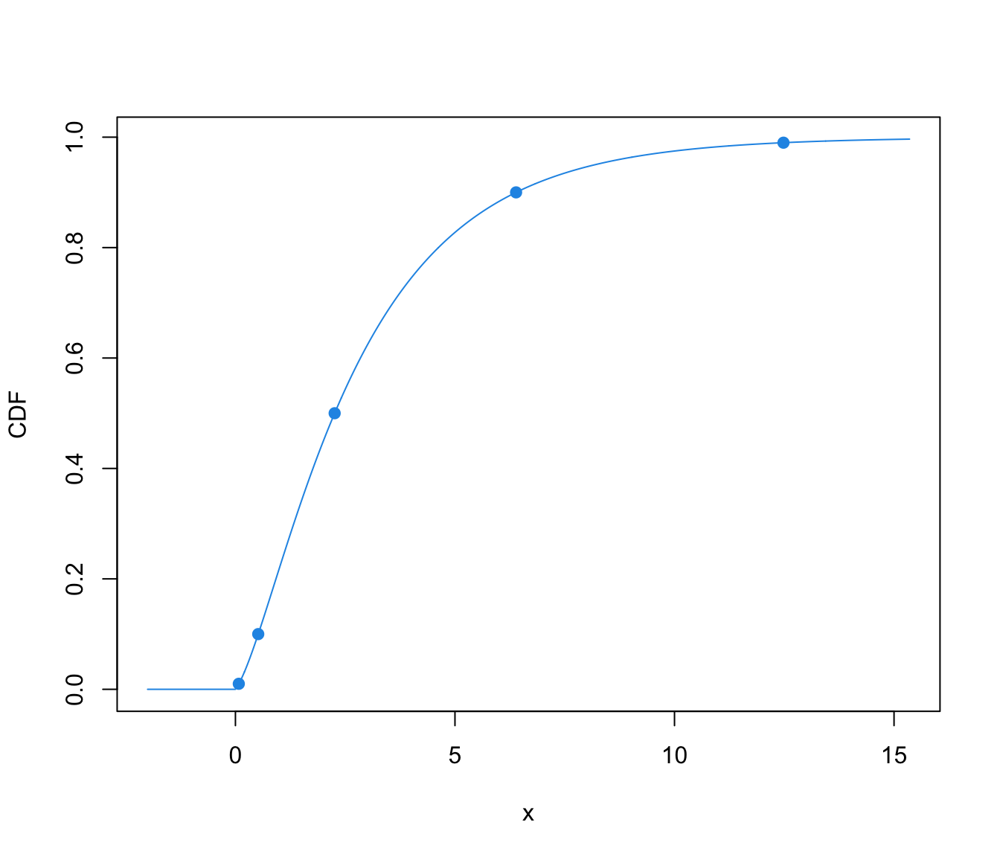
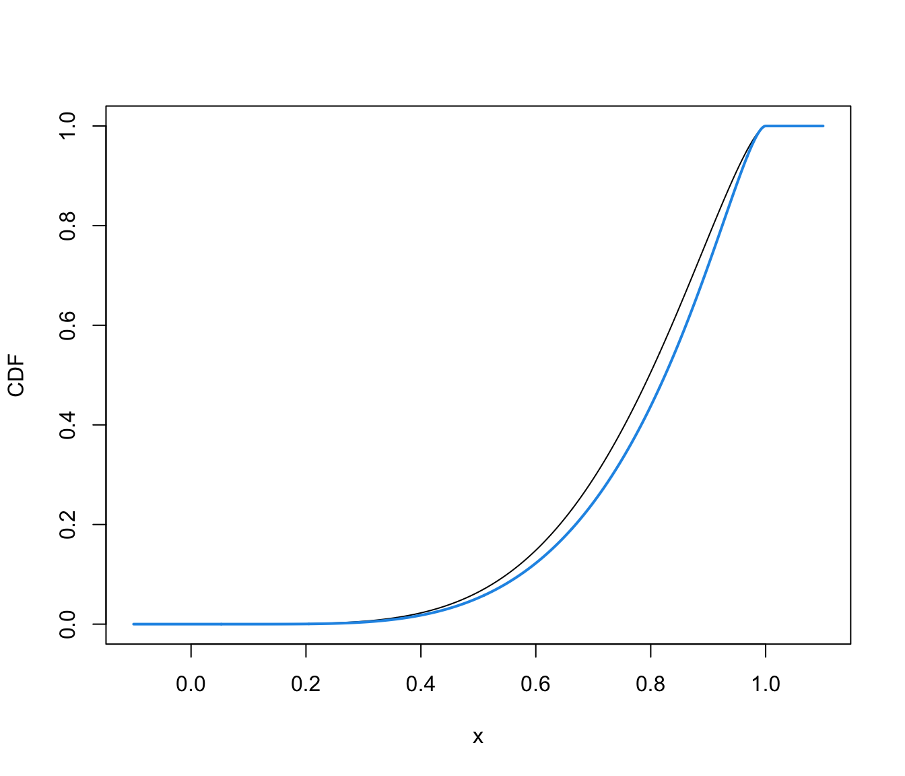
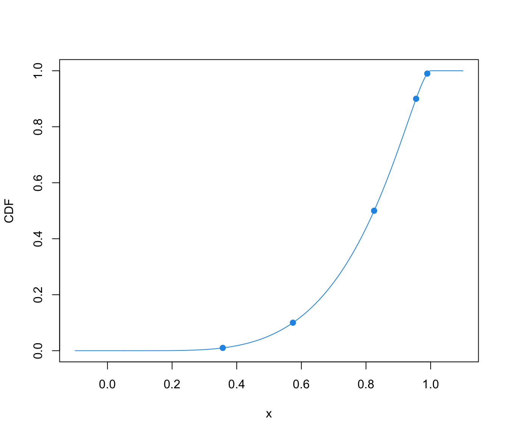
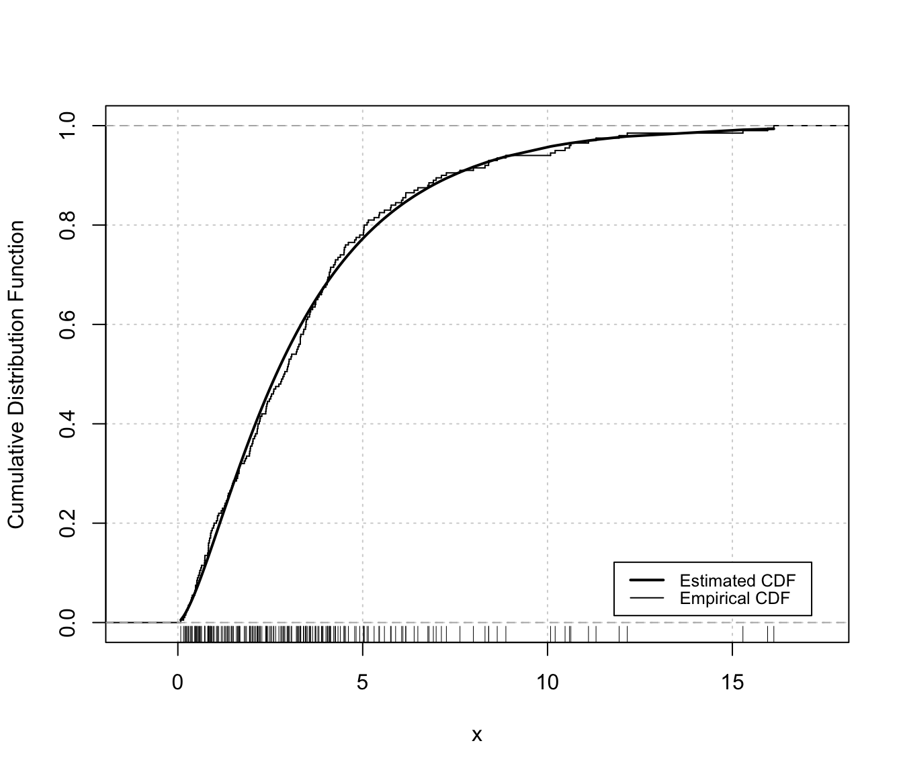
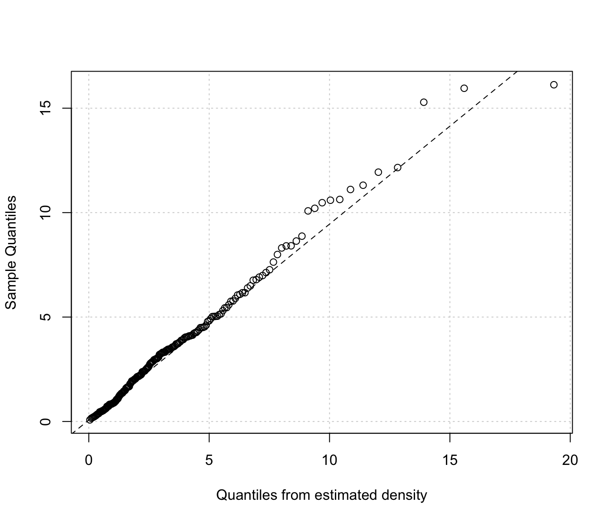
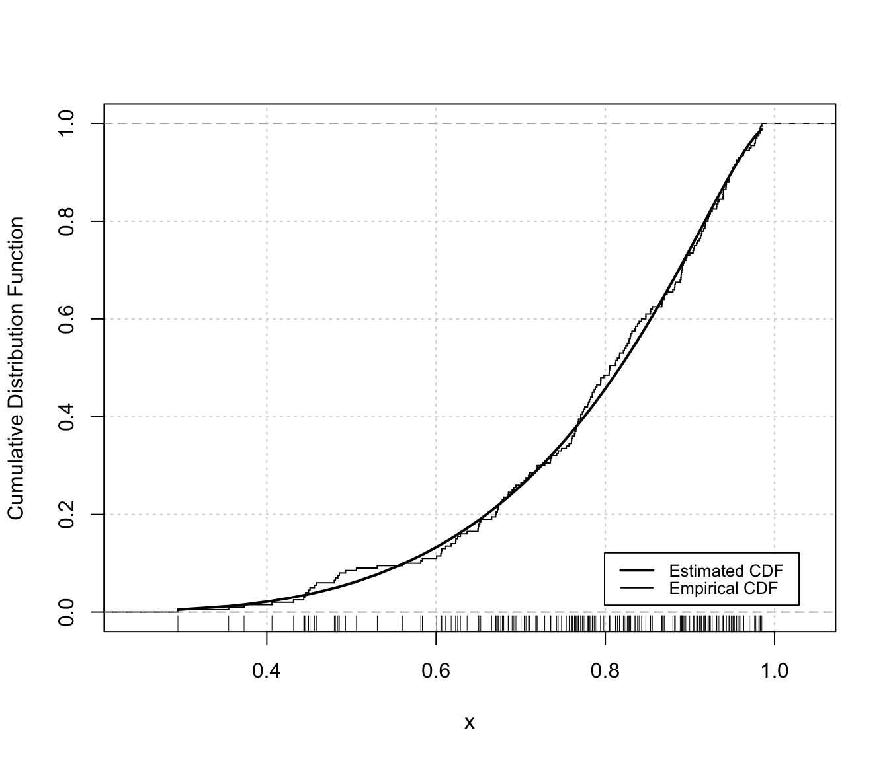
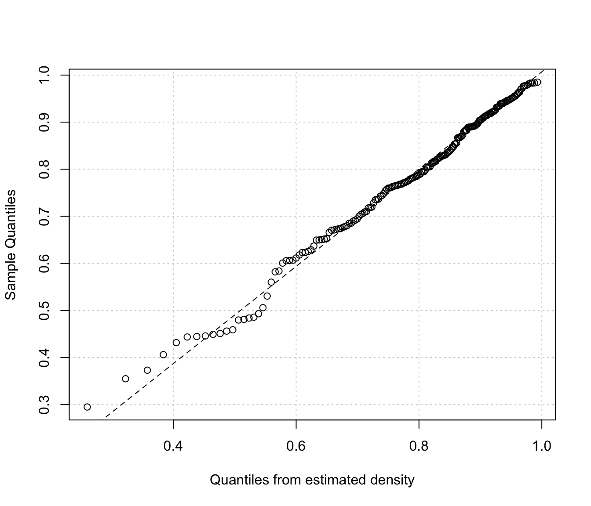

Cumulative distribution and quantiles of univariate model-based mixture density estimation for bounded data
densityMclustBounded.diagnostic.RdCompute the cumulative density function (cdf) or quantiles of a
one-dimensional density for bounded data estimated via the
transformation-based approach for Gaussian mixtures in
densityMclustBounded().
Diagnostic plots for density estimation of bounded data via transformation-based approach of Gaussian mixtures. Only available for the one-dimensional case.
The two diagnostic plots for density estimation in the one-dimensional case are discussed in Loader (1999, pp- 87-90).
Arguments
- object
An object of class
'mclustDensityBounded'obtained from a call todensityMclustBounded()function.- data
A numeric vector of evaluation points.
- ngrid
The number of points in a regular grid to be used as evaluation points if no
dataare provided.- ...
Additional arguments.
- p
A numeric vector of probabilities corresponding to quantiles.
- type
The type of graph requested:
"cdf"A plot of the estimated CDF versus the empirical distribution function."qq"A Q-Q plot of sample quantiles versus the quantiles obtained from the inverse of the estimated cdf.
- col
A pair of values for the color to be used for plotting, respectively, the estimated CDF and the empirical cdf.
- lwd
A pair of values for the line width to be used for plotting, respectively, the estimated CDF and the empirical cdf.
- lty
A pair of values for the line type to be used for plotting, respectively, the estimated CDF and the empirical cdf.
- legend
A logical indicating if a legend must be added to the plot of fitted CDF vs the empirical CDF.
- grid
A logical indicating if a
grid()should be added to the plot.
Value
cdfDensityBounded() returns a list of x and y values providing,
respectively, the evaluation points and the estimated cdf.
quantileDensityBounded() returns a vector of quantiles.
No return value, called for side effects.
Details
The cdf is evaluated at points given by the optional argument data.
If not provided, a regular grid of length ngrid for the evaluation
points is used.
The quantiles are computed using bisection linear search algorithm.
Examples
# \donttest{
# univariate case with lower bound
x <- rchisq(200, 3)
dens <- densityMclustBounded(x, lbound = 0)
xgrid <- seq(-2, max(x), length=1000)
cdf <- cdfDensityBounded(dens, xgrid)
str(cdf)
#> List of 2
#> $ x: num [1:1000] -2 -1.98 -1.97 -1.95 -1.93 ...
#> $ y: num [1:1000] 0 0 0 0 0 0 0 0 0 0 ...
plot(xgrid, pchisq(xgrid, df = 3), type = "l", xlab = "x", ylab = "CDF")
lines(cdf, col = 4, lwd = 2)

q <- quantileDensityBounded(dens, p = c(0.01, 0.1, 0.5, 0.9, 0.99))
cbind(quantile = q, cdf = cdfDensityBounded(dens, q)$y)
#> quantile cdf
#> [1,] 0.07667995 0.01
#> [2,] 0.51927506 0.10
#> [3,] 2.25981319 0.50
#> [4,] 6.39193414 0.90
#> [5,] 12.48185916 0.99
plot(cdf, type = "l", col = 4, xlab = "x", ylab = "CDF")
points(q, cdfDensityBounded(dens, q)$y, pch = 19, col = 4)

# univariate case with lower & upper bounds
x <- rbeta(200, 5, 1.5)
dens <- densityMclustBounded(x, lbound = 0, ubound = 1)
xgrid <- seq(-0.1, 1.1, length=1000)
cdf <- cdfDensityBounded(dens, xgrid)
str(cdf)
#> List of 2
#> $ x: num [1:1000] -0.1 -0.0988 -0.0976 -0.0964 -0.0952 ...
#> $ y: num [1:1000] 0 0 0 0 0 0 0 0 0 0 ...
plot(xgrid, pbeta(xgrid, 5, 1.5), type = "l", xlab = "x", ylab = "CDF")
lines(cdf, col = 4, lwd = 2)

q <- quantileDensityBounded(dens, p = c(0.01, 0.1, 0.5, 0.9, 0.99))
cbind(quantile = q, cdf = cdfDensityBounded(dens, q)$y)
#> quantile cdf
#> [1,] 0.3568030 0.01
#> [2,] 0.5738889 0.10
#> [3,] 0.8250813 0.50
#> [4,] 0.9550278 0.90
#> [5,] 0.9895724 0.99
plot(cdf, type = "l", col = 4, xlab = "x", ylab = "CDF")
points(q, cdfDensityBounded(dens, q)$y, pch = 19, col = 4)

# }
# \donttest{
# univariate case with lower bound
x <- rchisq(200, 3)
dens <- densityMclustBounded(x, lbound = 0)
plot(dens, x, what = "diagnostic")

 # or
densityMclustBounded.diagnostic(dens, type = "cdf")
# or
densityMclustBounded.diagnostic(dens, type = "cdf")

densityMclustBounded.diagnostic(dens, type = "qq")

# univariate case with lower & upper bounds
x <- rbeta(200, 5, 1.5)
dens <- densityMclustBounded(x, lbound = 0, ubound = 1)
plot(dens, x, what = "diagnostic")

 # or
densityMclustBounded.diagnostic(dens, type = "cdf")
# or
densityMclustBounded.diagnostic(dens, type = "cdf")
 densityMclustBounded.diagnostic(dens, type = "qq")
densityMclustBounded.diagnostic(dens, type = "qq")

# }